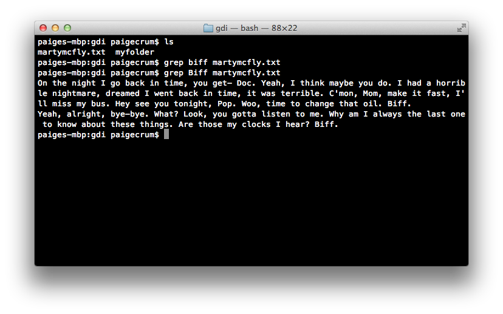
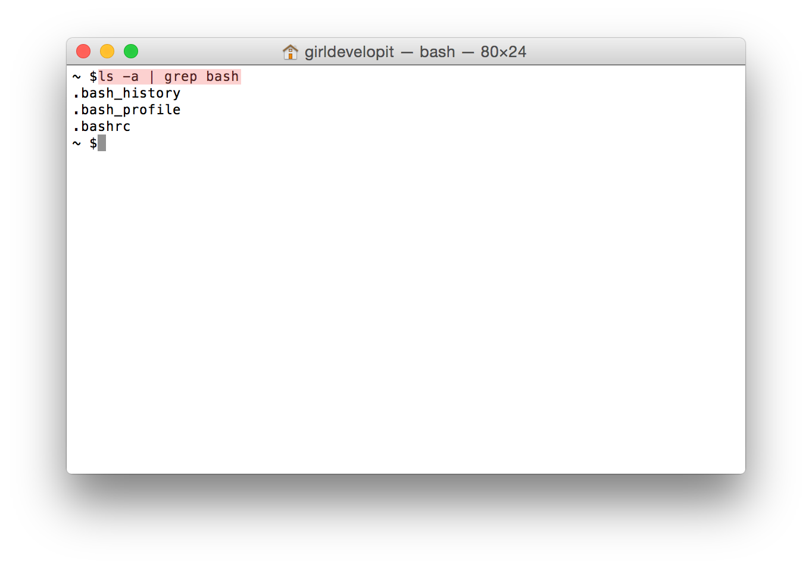

    <style>
      /* Adapting the 2-column style from national slides */
      .flex-container {
        display: flex;
      }
      .flex-item {
        flex-basis: 50%;
      }
    </style>
    
        <section>
          <h2>Search within a File</h2>
          <h3><code>grep</code></h3>

          <p>Use the <b>grep</b> command to search in files.</p>
          <p>The grep command outputs only the lines in a file that match a given pattern.</p>
          <p>The 1st argument is the pattern to match, and the 2nd, 3rd, and so on are the files to search within.</p>
          <pre><code class="bash" contenteditable>grep pattern file</code></pre>
        </section>

        <section>
          <h2>grep</h2>
          <h4>(search within a file for text that matches a pattern)</h4>
          
        </section>

        <section>
          <h2>Wildcard Matching</h2>

          <p>Use the <b>*</b> (asterisk) symbol to match <em>anything</em>.</p><br>
          <p>You can use this to search through all of a particular file type.</p>
          <pre><code class="bash" contenteditable>grep hello *.txt</code></pre><br>
          <p>The shell will build a list of all the files that match the non-asterisk part.</p>
        </section>

        <section>
          <h2>Finding Files</h2>
          <h3><code>find</code></h3>

          <p>Use the <b>find</b> command to find files according to name/metadata.</p><br>

          <p>Find all txt files under the current directory:</p>
          <pre><code class="bash" contenteditable>find . -name '*.txt' -print</code></pre>
        </section>

        <section>
          <h2>find</h2>
          <h4>(finding files)</h4>

          
        </section>

        <section>
          <h2>Standard Output</h2>
          <p>Most commands display their results to a mechanism called the standard output.</p>
          <p>By default, this directs its content to the display.</p>
          <p class="fragment">The standard output can be redirected to a file using the <code>></code> operator.</p>
          <p class="fragment"><code>ls > file_list.txt</code></p>
        </section>

        <section>
          <h2>Standard Output</h2>
          <p>In order to append to the file instead of overwriting it, use the <code>>></code> operator instead.</p>
          <p><code>ls >> file_list.txt</code></p>
          <p class="fragment">Both the <code>></code> and <code>>></code> operator will create the file if it doesn't exist.</p>
        </section>

        <section>
          <h2>Standard Input</h2>
          <p>Whenever commands accept keyboard input, it's likely they are really just drawing input from a mechanism called standard input.</p>
          <p>By default, this is set to keyboard input.</p>
        </section>

        <section>
          <h2>Standard Input</h2>
          <p>The input to a command can be redirected to  a file by using the <code><</code> operator.</p>
          <p><code>sort < file_list.txt</code></p>
          <p class="fragment">Both input and output can be redirected at the same time.</p>
          <p class="fragment"><code>sort < file_list.txt > sorted_file_list.txt</code></p>
        </section>

        <section>
          <h3>Let's develop it!</h3>

          <ol>
            <li>In the <b>cli</b> directory, output the contents of <b>file2.txt</b> to the terminal</li>
            <li>Add <a href="http://www.deloreanipsum.com/" target="_blank">a sentence</a> to <b>file2.txt</b></li>
            <li>Add a few more sentences to <b>file2.txt</b></li>
            <li>Search the file for the word of your choice and add the results to <b>file3.txt</b></li>
          </ol>
        </section>

        <section>
          <h2>Filters</h2>
          <h4>Filters are commands whose behavior follows the following pattern:</h4>
          <ol>
            <li>Accept input from standard input.</li>
            <li>Perform some operation on it.</li>
            <li>Send the results to standard output.</li>
          </ol>
        </section>

        <section>
          <h2>Filters</h2>
          <p>Check out the man pages for the following:</p>
          <div class="flex-container">
            <div class="flex-item">
              <p><code>sort</code></p>
              <p><code>uniq</code></p>
              <p><code>grep</code></p>
              <p><code>head</code></p>
              <p><code>tail</code></p>
            </div>
            <div class="flex-item">
              <p><code>fmt</code></p>
              <p><code>pr</code></p>
              <p><code>tr</code></p>
              <p><code>sed</code></p>
              <p><code>awk</code></p>
            </div>
          </div>
        </section>

        <section>
          <h2>Pipes</h2>
          <p>The "|" character can be used to allow  commands to communicate during execution.</p>
          <p>Pipes are placed between commands.</p>
          <p>A pipe will cause the output of the left command to be used as the input of the right command.</p>
          <p><code>ls -l | grep "myfile.txt" du | sort -nr</code></p>
        </section>

        <section>
          <h2>Let's Develop It!</h2>
          <p>Use the <code>ls</code> and <code>grep</code> commands to print out only the files in your home directory that contain the word "bash".</p>
        </section>

        <section>
          <h2>Let's Develop It!</h2>
          <p><code>ls -a | grep bash</code></p>
          
        </section>
